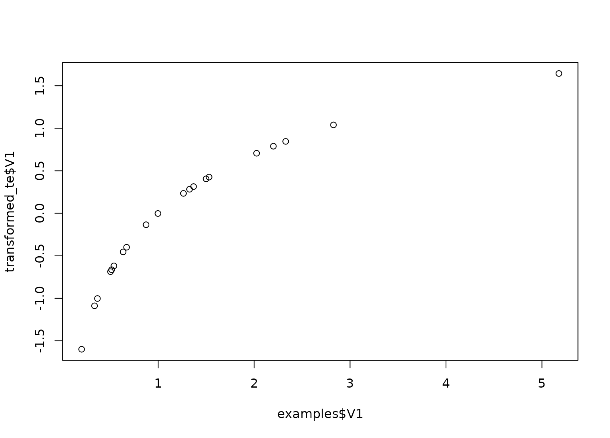

step_log creates a specification of a recipe step
that will log transform data.
step_log( recipe, ..., role = NA, trained = FALSE, base = exp(1), offset = 0, columns = NULL, skip = FALSE, signed = FALSE, id = rand_id("log") ) # S3 method for step_log tidy(x, ...)
| recipe | A recipe object. The step will be added to the sequence of operations for this recipe. |
|---|---|
| ... | One or more selector functions to choose which
variables are affected by the step. See |
| role | Not used by this step since no new variables are created. |
| trained | A logical to indicate if the quantities for preprocessing have been estimated. |
| base | A numeric value for the base. |
| offset | An optional value to add to the data prior to
logging (to avoid |
| columns | A character string of variable names that will
be populated (eventually) by the |
| skip | A logical. Should the step be skipped when the
recipe is baked by |
| signed | A logical indicating whether to take the signed log.
This is sign(x) * abs(x) when abs(x) => 1 or 0 if abs(x) < 1.
If |
| id | A character string that is unique to this step to identify it. |
| x | A |
An updated version of recipe with the new step
added to the sequence of existing steps (if any). For the
tidy method, a tibble with columns terms (the
columns that will be affected) and base.
set.seed(313) examples <- matrix(exp(rnorm(40)), ncol = 2) examples <- as.data.frame(examples) rec <- recipe(~ V1 + V2, data = examples) log_trans <- rec %>% step_log(all_predictors()) log_obj <- prep(log_trans, training = examples) transformed_te <- bake(log_obj, examples) plot(examples$V1, transformed_te$V1)#> # A tibble: 1 x 3 #> terms base id #> <chr> <dbl> <chr> #> 1 all_predictors() 2.72 log_IhS7o#> # A tibble: 2 x 3 #> terms base id #> <chr> <dbl> <chr> #> 1 V1 2.72 log_IhS7o #> 2 V2 2.72 log_IhS7o# using the signed argument with negative values examples2 <- matrix(rnorm(40, sd = 5), ncol = 2) examples2 <- as.data.frame(examples2) recipe(~ V1 + V2, data = examples2) %>% step_log(all_predictors()) %>% prep(training = examples2) %>% bake(examples2)#> Warning: NaNs produced#> Warning: NaNs produced#> Warning: NaNs produced#> Warning: NaNs produced#> # A tibble: 20 x 2 #> V1 V2 #> <dbl> <dbl> #> 1 -0.209 NaN #> 2 1.71 NaN #> 3 1.12 1.06 #> 4 1.65 1.19 #> 5 NaN 2.18 #> 6 1.15 1.08 #> 7 NaN 0.555 #> 8 0.102 NaN #> 9 0.670 1.37 #> 10 NaN 1.02 #> 11 NaN NaN #> 12 NaN NaN #> 13 NaN NaN #> 14 1.25 -0.0880 #> 15 2.21 0.774 #> 16 NaN NaN #> 17 NaN 2.49 #> 18 NaN 1.47 #> 19 NaN NaN #> 20 NaN NaNrecipe(~ V1 + V2, data = examples2) %>% step_log(all_predictors(), signed = TRUE) %>% prep(training = examples2) %>% bake(examples2)#> # A tibble: 20 x 2 #> V1 V2 #> <dbl> <dbl> #> 1 0 -1.24 #> 2 1.71 -1.81 #> 3 1.12 1.06 #> 4 1.65 1.19 #> 5 -1.63 2.18 #> 6 1.15 1.08 #> 7 -0.604 0.555 #> 8 0.102 -0.565 #> 9 0.670 1.37 #> 10 -2.65 1.02 #> 11 -1.34 -1.04 #> 12 -2.06 -1.51 #> 13 -0.613 -1.75 #> 14 1.25 0 #> 15 2.21 0.774 #> 16 -1.90 -0.0814 #> 17 -0.762 2.49 #> 18 -1.40 1.47 #> 19 -1.22 -0.825 #> 20 -1.20 -2.27